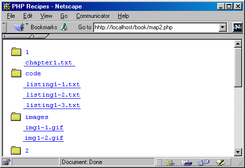

ГЛАВА 7
Файловый ввод/вывод и файловая система
Данная глава посвящена одному из важнейших аспектов РНР — средствам файлового ввода/вывода. Как нетрудно предположить, входные и выходные потоки данных интенсивно используются при разработке web-приложений. Не ограничиваясь простым чтением/записью файлов, РНР предоставляет в распоряжение программиста средства просмотра и модификации серверной информации, а также запуска внешних программ. Этим средствам и посвящена настоящая глава.
Проверка существования и размера файла
Прежде чем пытаться работать с файлом, желательно убедиться в том, что он существует. Для решения этой задачи обычно используются две функции:
file_exists( ) и is_file( ).
file_exists( )
Функция f ilе_ехists ( ) проверяет, существует ли заданный файл. Если файл существует, функция возвращает TRUE, в противном случае возвращается FALSE. Синтаксис функции file_exists( ):
bool file_exists(string файл)
Пример проверки существования файла:
if (! file_exists ($filename)) :
print "File $filename does not exist!";
endif:
is_file( )
Функция is_file( ) проверяет существование заданного файла и возможность выполнения с ним операций чтения/записи. В сущности, is_file( ) представляет собой более надежную версию file_exists( ), которая проверяет не только факт существования файла, но и то, поддерживает ли он чтение и запись данных:
bool is_file(string файл)
Следующий пример показывает, как убедиться в существовании файла и возможности выполнения операций с ним:
$file = "somefile.txt";
if (is_file($file)) :
print "The file $file is valid and exists!";
else :
print "The file $file does not exist or it is not a valid file!";
endif:
Убедившись в том, что нужный файл существует и с ним можно выполнять различные операции чтения/записи, можно переходить к следующему шагу — открытию файла.
filesize( )
Функция filesize( ) возвращает размер (в байтах) файла с заданным именем или FALSE в случае ошибки. Синтаксис функции filesize( ):
int filesize(string имя_файла)
Предположим, вы хотите определить размер файла pastry.txt. Для получения нужной информации можно воспользоваться функцией filesize( ):
$fs = filesize("pastry.txt"); print "Pastry.txt is $fs bytes.";
Выводится следующий результат:
Pastry.txt is 179 bytes.
Прежде чем выполнять операции с файлом, необходимо открыть его и связать с файловым манипулятором, а после завершения работы с файлом его следует закрыть. Эти темы рассматриваются в следующем разделе.
Прежде чем выполнять операции ввода/вывода с файлом, необходимо открыть его функцией fopen( ).
fopen( )
Функция fopen( ) открывает файл (если он существует) и возвращает целое число — так называемый файловый манипулятор (file handle). Синтаксис функции fopen( ):
int fopen (string файл, string режим [, int включение_пути])
Открываемый файл может находиться в локальной файловой системе, существовать в виде стандартного потока ввода/вывода или представлять файл в удаленной системе, принимаемой средствами HTTP или FTP.
Параметр файл может задаваться в нескольких формах, перечисленных ниже:
Если параметр содержит имя локального файла, функция fopen( ) открывает этот файл и возвращает манипулятор.
Если параметр задан в виде php://stdin, php://stdout или php://stderr, открывается соответствующий стандартный поток ввода/вывода.
Если параметр начинается с префикса http://, функция открывает подключение HTTP к серверу и возвращает манипулятор для указанного файла.
Если параметр начинается с префикса ftp://, функция открывает подключение FTP к серверу и возвращает манипулятор для указанного файла. В этом случае следует обратить особое внимание на два обстоятельства: если сервер не поддерживает пассивный режим FTP, вызов fopen( ) завершается неудачей. Более того, FTP-файлы открываются либо для чтения, либо для записи.
 При
работе в пассивном режиме сервер ЯР ожидает
подключения со стороны клиентов. При
работе в активном режиме сервер сам
устанавливает соединение с клиентом. По
умолчанию обычно используется активный
режим.
При
работе в пассивном режиме сервер ЯР ожидает
подключения со стороны клиентов. При
работе в активном режиме сервер сам
устанавливает соединение с клиентом. По
умолчанию обычно используется активный
режим.
Параметр режим определяет возможность выполнения чтения и записи в файл. В табл. 7.1 перечислены некоторые значения, определяющие режим открытия файла.
Таблица 7.1. Режимы открытия файла
| Режим | Описание |
|
r |
Только чтение. Указатель текущей позиции устанавливается в начало файла |
| r+ | Чтение и запись. Указатель текущей позиции устанавливается в начало файла |
| w | Только запись. Указатель текущей позиции устанавливается в начало файла, а все содержимое файла уничтожается. Если файл не существует, функция пытается создать его |
| w+ | Чтение и запись. Указатель текущей позиции устанавливается в начало файла, а все содержимое файла уничтожается. Если файл не существует, функция пытается создать его |
| a | Только запись. Указатель текущей позиции устанавливается в конец файла. Если файл не существует, функция пытается создать его |
| a+ | Чтение и запись. Указатель текущей позиции устанавливается в конец файла. Если файл не существует, функция пытается создать его |
Если необязательный третий параметр включение_пути равен 1, то путь к файлу определяется по отношению к каталогу включаемых файлов, указанному в файле php.ini (см. главу 1).
Ниже приведен пример открытия файла функцией fopen( ). Вызов die( ), используемый в сочетании с fopen( ), обеспечивает вывод сообщения об ошибке в том случае, если открыть файл не удастся:
$file = "userdata.txt"; // Некоторый файл
$fh = fopen($file, "a+") or die("File ($file) does not exist!");
Следующий фрагмент открывает подключение к сайту РНР (http://www.php.net):
$site = "http://www.php.net": // Сервер, доступный через HTTP
$sh = fopen($site., "r"); //Связать манипулятор с индексной страницей Php.net
После завершения работы файл всегда следует закрывать функцией fclose( ).
fclose ( )
Функция fclose( ) закрывает файл с заданным манипулятором. При успешном закрытии возвращается TRUE, при неудаче — FALSE. Синтаксис функции fclose( ):
int fclose(int манипулятор)
Функция fclose( ) успешно закрывает только те файлы, которые были ранее открыты функциями fopen( ) или fsockopen( ). Пример закрытия файла:
$file = "userdata.txt";
if (file_exists($file)) :
$fh = fopen($file, "r");
// Выполнить операции с файлом
fclose($fh);
else :
print "File Sfile does not exist!";
endif;
С открытыми файлами выполняются две основные операции — чтение и запись.
is_writeable( )
Функция is_writeable( ) позволяет убедиться в том, что файл существует и для него разрешена операция записи. Возможность записи проверяется как для файла, так и для каталога. Синтаксис функции is_writeable( ):
bool is_writeable (string файл)
Одно важное обстоятельство: скорее всего, РНР будет работать под идентификатором пользователя, используемым web-сервером (как правило, «nobody»). Пример использования is_writeable( ) приведен в описании функции fwrite( ).
fwrite ( )
Функция fwrite( ) записывает содержимое строковой переменной в файл, заданный файловым манипулятором. Синтаксис функции fwrite( ):
int fwrite(int манипулятор, string переменная [, int длина])
Если при вызове функции передается необязательный параметр длина, запись останавливается либо после записи указанного количества символов, либо при достижении конца строки. Проверка возможности записи в файл продемонстрирована в следующем примере:
<?
// Информация о трафике на пользовательском сайте
$data = "08:13:00|12:37:12|208.247.106.187|Win98";
$filename = "somefile.txt";
// Если файл существует и в него возможна запись
if ( is_writeable($filename) ) :
// Открыть файл и установить указатель текущей позиции в конец файла
$fh = fopen($filename, "a+");
// Записать содержимое $data в файл
$success - fwrite($fh, $data);
// Закрыть файл
fclose($fh); else :
print "Could not open Sfilename for writing";
endif;
?>
 Функция
fputs( ) является псевдонимом fwrite( ) и может
использоваться всюду, где используется fwrite(
).
Функция
fputs( ) является псевдонимом fwrite( ) и может
использоваться всюду, где используется fwrite(
).
fputs( )
Функция fputs( ) является псевдонимом fwrite( ) и имеет точно такой же синтаксис. Синтаксис функции fputs( ):
int fputs(int манипулятор, string переменная [, int длина])
Лично я предпочитаю использовать fputs( ). Следует помнить, что это всего лишь вопрос стиля, никак не связанный с какими-либо различиями между двумя функциями.
Несомненно, чтение является самой главной операцией, выполняемой с файлами. Ниже описаны некоторые функции, повышающие эффективность чтения из файла. Синтаксис этих функций практически точно копирует синтаксис аналогичных функций записи.
is_readable( )
Функция i s_readable( ) позволяет убедиться в том, что файл существует и для него разрешена операция чтения. Возможность чтения проверяется как для файла, так и для каталога. Синтаксис функции is_readable( ):
boo! is_readable (string файл]
Скорее всего, РНР будет работать под идентификатором пользователя, используемым web-сервером (как правило, «nobody»), поэтому для того чтобы функция is_readable( ) возвращала TRUE, чтение из файла должно быть разрешено всем желающим. Следующий пример показывает, как убедиться в том, что файл существует и доступен для чтения:
if ( is_readable($filename) ) :
// Открыть файл и установить указатель текущей позиции в конец файла
$fh = fopen($filename, "r");
else :
print "$filename is not readable!";
endif;
fread( )
Функция fread( ) читает из файла, заданного файловым манипулятором, заданное количество байт. Синтаксис функции fwrite( ):
int fread(int манипулятор, int длина)
Манипулятор должен ссылаться на открытый файл, доступный для чтения (см. описание функции is_readable( )). Чтение прекращается после прочтения заданного количества байт или при достижении конца файла. Рассмотрим текстовый файл pastry.txt, приведенный в листинге 7.1. Чтение и вывод этого файла в браузере осуществляется следующим фрагментом:
$fh = fopen('pastry.txt', "r") or die("Can't open file!");
$file = fread($fh, filesize($fh));
print $file;
fclose($fh);
Используя функцию fllesize( ) для определения размера pastry.txt в байтах, вы гарантируете, что функция fread( ) прочитает все содержимое файла.
Листинг 7.1. Текстовый файл pastry.txt
Recipe: Pastry Dough
1 1/4 cups all-purpose flour
3/4 stick (6 tablespoons) unsalted butter, chopped
2 tablespoons vegetable shortening 1/4 teaspoon salt
3 tablespoons water
fgetc( )
Функция fgetc( ) возвращает строку, содержащую один символ из файла в текущей позиции указателя, или FALSE при достижении конца файла. Синтаксис функции fgetc( ):
string fgetc (int манипулятор)
Манипулятор должен ссылаться на открытый файл, доступный для чтения (см. описание функции is_readable( ) ранее в этой главе). В следующем примере продемонстрированы посимвольное чтение и вывод файла с использованием функции fgetc( ):
$fh = fopen("pastry.txt", "r"); while (! feof($fh)) :
$char = fgetc($fh):
print $char; endwhile;
fclose($fh);
fgets( )
Функция fgets( ) возвращает строку, прочитанную от текущей позиции указателя в файле, определяемом файловым манипулятором. Файловый указатель должен ссылаться на открытый файл, доступный для чтения (см. описание функции is_readable( ) ранее в этой главе). Синтаксис функции fgets( ):
string fgets (int манипулятор, int длина)
Чтение прекращается при выполнении одного из следующих условий:
Если вы хотите организовать построчное чтение файла, передайте во втором параметре значение, заведомо превышающее количество байт в строке. Пример построчного чтения и вывода файла:
$fh = fopen("pastry.txt", "r");
while (! feof($fh));
$line = fgets($fh, 4096);
print $line. "<br>";
endwhile;
fclose($fh):
fgetss( )
Функция fgetss( ) полностью аналогична fgets( ) за одним исключением — она пытается удалять из прочитанного текста все теги HTML и РНР:
string fgetss (Int манипулятор, int длина [, string разрешенные_теги])
Прежде чем переходить к примерам, ознакомьтесь с содержимым листинга 7.2 — этот файл используется в листингах 7.3 и 7.4.
Листинг 7.2. Файл science.html
<html>
<head>
<title>Breaking News - Science</title>
<body>
<h1>Alien lifeform discovered</h1><br>
<b>August 20. 2000</b><br>
Early this morning, a strange new form of fungus was found growing in the closet of W. J. Gilmore's old apartment refrigerator. It is not known if powerful radiation emanating from the tenant's computer monitor aided in this evolution.
</body>
</html>
Листинг 7.З. Удаление тегов из файла HTML перед отображением в браузере
<?
$fh = fopen("science.html", "r");
while (! feof($fh)) :
print fgetss($fh, 2048);
endwhile;
fclose($fh);
?>
Результат приведен ниже. Как видите, из файла science.html были удалены все теги HTML, что привело к потере форматирования:
Breaking News - Science Alien lifeform discovered August 20. 2000 Early this morning, a strange new form of fungus was found growing in the closet of W. J. Gilmore's old apartment refrigerator. It is not known if powerful radiation emanating from the tenant's computer monitor aided in this evolution.
В некоторых ситуациях из файла удаляются все теги, кроме некоторых — например, тегов разрыва строк <br>. Листинг 7.4 показывает, как это делается.
Листинг 7.4. Выборочное удаление тегов из файла HTML
<?
$fh = fopenC'science.html", "r");
$allowable = "<br>";
while (! feof($fh)) :
print fgetss($fh. 2048, $allowable);
endwhile;
fclose($fh);
?>
Результат:
Breaking News - Science Alien lifeform discovered August 20. 2000 Early this morning, a strange new form of fungus was found growing in the closet of W. J. Gilmore's old apartment refrigerator. It is not known if powerful radiation emanating from the tenant's computer monitor aided in this evolution.
Как видите, функция fgetss( ) упрощает преобразование файлов, особенно при наличии большого количества файлов HTML, отформатированных сходным образом.
Функция file( ) загружает все содержимое файла в индексируемый массив. Каждый элемент массива соответствует одной строке файла. Синтаксис функции filе ( ):
array file (string файл [, int включение_пути])
Если необязательный третий параметр включение_пути равен 1, то путь к файлу определяется по отношению к каталогу включаемых файлов, указанному в файле php.ini (см. главу 1). В листинге 7.5 функция file( ) используется для загрузки файла pastry.txt (см. листинг 7.1).
Листинг 7.5. Загрузка файла pastry.txt функцией file( )
<?
$file_array = file( "pastry.txt" );
while ( list( $line_num. $line ) = eacht($file_array ) ):
print "<b>Line $line_num:</b> ", htmlspecialchars($line ), "<br>\n"
endwhile;
?>
Каждая строка массива выводится вместе с номером:
Line 0: Recipe: Pastry Dough
Line 1: 1 1/4 cups all-purpose flour
Line 2: 3/4 stick (6 tablespoons) unsalted butter, chopped
Line 3: 2 tablespoons vegetable shortening
Line 4: 1/4 teaspoon salt
Line 5: 3 tablespoons water
Перенаправление файла в стандартный выходной поток
Функция readfile( ) читает содержимое файла и направляет его в стандартный вывод (в большинстве случаев — в браузер). Синтаксис функции readfile( ):
int readfile (string файл [, int включение_пути])
Функция возвращает количество прочитанных байтов. Файл может находиться в локальной файловой системе, существовать в виде стандартного потока ввода/вывода или представлять файл в удаленной системе, принимаемой средствами HTTP или FTP. Параметр файл задается по тем же правилам, что и в функции fopen( ).
Предположим, у вас имеется файл latorre.txt, содержимое которого вы хотите вывести в браузере:
Restaurant "La Тоrrе." located in Nettuno, Italy, offers an eclectic blend of style. history, and fine seafood cuisine. Within the walls of the medieval borgo surrounding the city, one can dine while watching the passersby shop in the village boutiques. Comfort coupled with only the freshest seafare make La Torre one of Italy's finest restaurants.
При выполнении следующего фрагмента все содержимое latorre.txt направляется в стандартный выходной поток:
<?
$restaurant_file = "latorre.txt";
// Направить весь файл в стандартный выходной поток
readfile($restaurant_filе);
?>
Открытие файлового манипулятора процесса
popen( )
Наряду с обычными файлами можно открывать файловые манипуляторы для взаимодействия с процессами на сервере. Задача решается функцией рореn( ), которая имеет следующий синтаксис:
int popen (string команда, string режим)
Параметр команда определяет выполняемую системную команду, а параметр режим описывает режим доступа:
<?
// Открыть файл "spices.txt" для записи
$fh = fopen("spices.txt","w");
// Добавить несколько строк текста
fputs($fh, "Parsley, sage, rosemary\n");
fputs($fh, "Paprika, salt, pepper\n");
fputs($fh, "Basil, sage, ginger\n");
// Закрыть манипулятор
fclose($fh);
// Открыть процесс UNIX grep для поиска слова Basil в файле spices.txt
$fh - popen("grep Basil < spices.txt", "r");
// Вывести результат работы grep
fpassthru($fh);
?>
Результат выглядит так:
Basil, sage, ginger
Функция fpassthru( ) является аналогом функции passthru( ), рассматриваемой в разделе «Запуск внешних программ» этой главы.
pclose( )
После выполнения всех операций файл или процесс необходимо закрыть. Функция pclose( ) закрывает соединение с процессом, заданным манипулятором, по аналогии с тем, как функция fclose( ) закрывает файл, открытый функцией fopen( ). Синтаксис функции pclose( ):
int pclose (int манипулятор}
В параметре манипулятор передается манипулятор, полученный ранее при успешном вызове рореn( ).
Открытие соединения через сокет
РНР не ограничивается взаимодействием с файлами и процессами — вы также можете устанавливать соединения через сокеты. Сокет (socket) представляет собой программную абстракцию, позволяющую устанавливать связь с различными службами другого компьютера.
fsockopen( )
Функция fsockopen( ) устанавливает сокетное соединение с сервером в Интернете
через протокол TCP или UDP. Синтаксис функции fsockopen( ):
int fsockopen (string узел, int порт [, int код_ошибки [, string текст_ошибки [, int тайм-аут]]])
Необязательные параметры код_ошибки и текст_ошибки содержат информацию, которая будет выводиться в случае неудачи при подключении к серверу. Оба параметра должны передаваться по ссылке. Третий необязательный параметр, тайм-аут, задает продолжительность ожидания ответа от сервера (в секундах). В листинге 7.6 продемонстрировано применение функции fsockopen( ) для получения информации о сервере. Однако перед рассмотрением листинга 7.6 необходимо познакомиться еще с одной функцией — socket_set_blocking( ).
 UDP
(User Datagram Protocol) — коммуникационный протокол,
не ориентированный на соединение.
UDP
(User Datagram Protocol) — коммуникационный протокол,
не ориентированный на соединение.
socket_set_blocking( )
Функция socket_set_b1ocki ng( ) позволяет установить контроль над тайм-аутом для операций с сервером:
socket_set_blocking(int манипулятор, boolean режим)
Параметр манипулятор задает открытый ранее сокет, а параметр режим выбирает режим, в который переключается сокет (TRUE для блокирующего режима, FALSE для неблокирующего режима). Пример использования функций fsockopen( ) и socket_set_blocking( ) приведен в листинге 7.6.
Листинг 7.6. Использование функции fsockopen() для получения информации о сервере
<?
function getthehost($host.$path) {
// Открыть подключение к узлу
$fp - fsockopen($host, 80, &$errno, &$errstr, 30);
// Перейти в блокирующий режим
socket_set_blocking($fp, 1),
// Отправить заголовки
fputs($fp,"GET $path HTTP/1.1\r\n");
fputs ($fp, "Host: $host\r\n\r\n"); $x = 1;
// Получить заголовки
while($x < 10) :
$headers = fgets ($fp, 4096);
print $headers;
$x++;
endwhile;
// Закрыть манипулятор
fclose($fp);
}
getthehost("www. apress.com", "/");
?>
В результате выполнения листинга 7.6 выводится следующий результат:
НТТР/1.1 200 OK Server: Microsoft-IIS/4.0 Content-location:
http://www.apress.com/0efault.htm Date: Sat. 19 Aug 2000 23:03:25 GMT
Content-Type: text/html Accept-Ranges: bytes Last-Modified: Wed. 19 Jul
2000 20:25:06 GMT ETag: "f0a61666dbff1bf1:34a5" Content-Length: 1311
pfsockopen( )
Функция pfsockopen( ) представляет собой устойчивую (persistent) версию fsockopen( ). Это означает, что соединение не будет автоматически разорвано по завершении сценария, в котором была вызвана функция. Синтаксис функции pfsockopen( ):
int pfsockopen (string узел, int порт [, int код_ошибки [, string текст _ошибки [, int тайм-аут]]])
В зависимости от конкретных целей вашего приложения может оказаться удобнее использовать pfsockopen( ) вместо fsockopen( ).
Сценарии РНР также могут выполнять программы, находящиеся на сервере. Такая возможность особенно часто используется при администрировании системы через web-браузер, а также для более удобного получения сводной информации о системе.
ехес( )
Функция ехес( ) запускает заданную программу и возвращает последнюю строку ее выходных данных. Синтаксис функции ехес( ):
string exec (string команда [, string массив [, int возврат]])
Обратите внимание: функция ехес( ) только выполняет команду, не выводя результатов ее работы. Все выходные данные команды можно сохранить в необязательном параметре массив. Кроме того, если при заданном параметре массив также задается переменная возврат, последней присваивается код возврата выполненной команды.
Листинг 7.7 показывает, как использовать функцию ехес( ) для выполнения системной функции UNIX ping.
Листинг 7.7. Проверка связи с сервером с применением функции ехес( )
<?
exec("ping -с 5 www.php.net", $ping);
// В Windows - exec("ping -n 5 www.php.net. $ping);
for ($i=0; $i< count($ping);$i++) :
print "<br>$ping[$i]";
endfor;
?>
Результат:
PING www.php.net (208.247.106.187): 56 data bytes
64 bytes from 208.247.106.187: icmp_seq=0 ttl=243 time=66.602 ms
64 bytes from 208.247.106.187: icmp_seq=1 ttl=243 time=55.723 ms
64 bytes from 208.247.106.187: icmp_seq=2 ttl=243 time=70.779 ms
64 bytes from 208.247.106.187: icmp_seq=3 ttl=243 time=55.339 ms
64 bytes from 208.247.106.187: icmp_seq=4 ttl=243 time=69.865 ms
-- www.php.net ping statistics --
5 packets transmitted. 5 packets received. 0% packet loss
round-trip min/avg/max/stddev - 55.339/63.662/70.779/6.783 ms
Существует и другой способ выполнения системных команд, не требующий вызова функций, — выполняемая команда заключается в обратные апострофы (` `), а результаты ее работы отображаются в браузере. Пример:
$output = `ls`;
print "<pre>$output</pre>";
Этот фрагмент выводит в браузер содержимое каталога, в котором находится сценарий.
 Внутренний
параметр ping -с 5 (-п 5 в системе Windows) задает
количество опросов сервера.
Внутренний
параметр ping -с 5 (-п 5 в системе Windows) задает
количество опросов сервера.
Если вы хотите просто вернуть неформатированные результаты выполнения команды, воспользуйтесь функцией passthru( ), описанной ниже.
passthru( )
Функция passthru( ) работает почти так же, как ехес( ), за одним исключением — она автоматически выводит результаты выполнения команды. Синтаксис функции passthru( ):
void passthru(string команда [, int возврат])
Если при вызове passthru( ) передается необязательный параметр возврат, этой переменной присваивается код возврата выполненной команды.
escapeshellcmd( )
Функция escapeshellcmd( ) экранирует все потенциально опасные символы, которые могут быть введены пользователем (например, на форме HTML), для выполнения команд exec( ), passthru( ), system( ) или рореn( ). Синтаксис:
string escapeshellcmd (string команда)
К пользовательскому вводу всегда следует относиться с определенной долей осторожности, но даже в этом случае пользователи могут вводить команды, которые будут исполняться функциями запуска системных команд. Рассмотрим следующий фрагмент:
$user_input = `rm -rf *`; // Удалить родительский каталог и все его подкаталоги
ехес($user_input); // Выполнить $user_input !!!
Если не предпринять никаких мер предосторожности, такая команда приведет к катастрофе. Впрочем, можно воспользоваться функций escapeshellcmd( ) для экранирования пользовательского ввода:
$user_input = `rm - rf *`; // Удалить родительский каталог и все его подкаталоги
ехес( escapeshellcmd($user_input)); // Экранировать опасные символы
Функция escapeshellcmd( ) экранирует символ *, предотвращая катастрофические последствия выполнения команды.
 Безопасность
является одним из важнейших аспектов
программирования в среде Web, поэтому я
посвятил целую главу этой теме и ее
отношению к программированию РНР. За
дополнительной информацией обращайтесь к
главе 16.
Безопасность
является одним из важнейших аспектов
программирования в среде Web, поэтому я
посвятил целую главу этой теме и ее
отношению к программированию РНР. За
дополнительной информацией обращайтесь к
главе 16.
В РНР существуют функции для просмотра и выполнения различных операций с файлами на сервере. Информация об атрибутах серверных файлов (местонахождение, владелец и привилегии) часто бывает полезной.
basename( )
Функция basename( ) выделяет имя файла из переданного полного имени. Синтаксис функции basename( ):
string basename(string полное_имя)
Выделение базового имени файла из полного имени происходит следующим образом:
$path = "/usr/local/phppower/htdocs/index.php"; $file = basename($path); // $file = "index.php"
Фактически эта функция удаляет из полного имени путь и оставляет только имя файла.
getlastmod( )
Функция getlastmod( ) возвращает дату и время последней модификации страницы, из которой вызывается функция. Синтаксис функции getlastmod( ):
int getlastmod(void)
Возвращаемое значение соответствует формату даты/времени UNIX, и для его форматирования можно воспользоваться функцией date( ). Следующий фрагмент выводит дату последней модификации страницы:
echo "Last modified: ".date( "H:i:s a". getlastmod( ) );
stat( )
Функция stat( ) возвращает индексируемый массив с подробной информацией о файле с заданным именем:
array stat(string имя_файла)
В элементах массива возвращается следующая информация:
0 Устройство
1 Индексный узел (inode)
2 Режим защиты индексного узла
3 Количество ссылок
4 Идентификатор пользователя владельца
5 Идентификатор группы владельца
6 Тип устройства индексного узла
7 Размер в байтах
8 Время последнего обращения
9 Время последней модификации
10 Время последнего изменения
11 Размер блока при вводе/выводе в файловой системе
12 Количество выделенных блоков
Таким образом, если вы хотите узнать время последнего обращения к файлу, обратитесь к элементу 8 возвращаемого массива. Рассмотрим пример:
$file - "datafile.txt";
list($dev, $inode, $inodep, $nlink, $uid, $gid, $inodev, $size, $atime, $mtime, $ctime,
$bsize) = stat($file);
print "$file is $size bytes. <br>";
print "Last access time: $atime <br>";
print "Last modification time: $mtime <br>";
Результат:
popen.php is 289 bytes.
Last access time: August 15 2000 12:00:00
Last modification time: August 15 2000 10:07:18
В этом примере я воспользовался конструкцией list () для присваивания имен каждому возвращаемому значению. Конечно, с таким же успехом можно вернуть массив, в цикле перебрать элементы и вывести всю необходимую информацию. Как видите, функция stat ( ) позволяет получить различные полезные сведения о файле.
Отображение и изменение характеристик файлов
У каждого файла в системах семейства UNIX есть три важные характеристики:
Все эти характеристики можно изменить при помощи соответствующих функций РНР. Функции, описанные в этом разделе, не работают в системах семейства Windows.
 Если
у вас нет опыта работы в операционных
системах UNIX, информацию о характеристиках
файловой системы UNIX можно получить по
адресу http://sunsite.auc.dk/linux-newbie/FAQ2.htm. Темы
принадлежности группе, владения и
разрешений рассматриваются в разделе 3.2.6.
Если
у вас нет опыта работы в операционных
системах UNIX, информацию о характеристиках
файловой системы UNIX можно получить по
адресу http://sunsite.auc.dk/linux-newbie/FAQ2.htm. Темы
принадлежности группе, владения и
разрешений рассматриваются в разделе 3.2.6.
chgrp( )
Функция chgrp( ) пытается сменить группу, которой принадлежит заданный файл. Синтаксис функции chgrp( ):
int chgrp (string имя_файла, mixed группа)
filegroup( )
Функция filegroup( ) возвращает идентификатор группы владельца файла с заданным именем или FALSE в случае ошибки. Синтаксис функции filegroup( ):
int filegroup (string имя_файла)
chmod( )
Функция chmod( ) изменяет разрешения файла с заданным именем. Синтаксис функции chmod( ):
int chmod (string имя_файла, int разрешения)
Разрешения задаются в восьмеричной системе. Специфика задания параметра функции chmod ( ) продемонстрирована в следующем примере:
chmod("data_file.txt", g+r); // He работает
chmod("data_file.txt", 766); // Не работает
chmod("data_file.txt", 0766); // Работает
fileperms( )
Функция fileperms( ) возвращает разрешения файла с заданным именем или FALSE в случае ошибки. Синтаксис функции fileperms( ):
int fileperms (string имя_файла)
chown( )
Функция chown( ) пытается сменить владельца файла. Право изменения владельца файла предоставляется только привилегированному пользователю. Синтаксис функции chown( ):
int chown (string имя_файла, mixed пользователь)
fileowner( )
Функция fileowner( ) возвращает идентификатор пользователя для владельца файла с заданным именем. Синтаксис функции fileowner( ):
int fileowner (string имя_файла)
Копирование и переименование файлов
К числу других полезных системных функций, которые могут выполняться в сценариях РНР, относятся копирование и переименование файлов на сервере. Эти операции выполняются двумя функциями: сору( ) и rename( ).
сору( )
Скопировать файл в сценарии РНР ничуть не сложнее, чем при помощи команды UNIX ср. Задача решается функцией РНР сору( ). Синтаксис функции сору( ):
int copy (string источник, string приемник)
Функция сору( ) пытается скопировать файл источник в файл приемник; в случае успеха возвращается TRUE, а при неудаче — FALSE. Если файл приемник не существует, функция сору( ) создает его. Следующий пример показывает, как создать резервную копию файла при помощи функции сору( ):
$data_file = "datal.txt";
copy($data_file. $data_file'.bak') or die("Could not copy $data_file");
rename ( )
Функция rename( ) переименовывает файл. В случае успеха возвращается TRUE, a при неудаче — FALSE. Синтаксис функции rename( ):
bool rename (string старое_имя, string новое_имя)
Пример переименования файла функцией rename( ):
$data_file = "datal.txt";
rename($data file, $datafile'.old') or die ("Could not rename $data file");
unlink( )
Функция unlink( ) удаляет файл с заданным именем. Синтаксис:
int unlink (string файл)
Если вы работаете с РНР в системе Windows, при использовании этой функции иногда возникают проблемы. В этом случае можно воспользоваться описанной выше функцией system( ) и удалить файл командой DOS del:
system ("del filename.txt");
Функции РНР позволяют просматривать содержимое каталогов и перемещаться по ним. В листинге 7.8 изображена типичная структура каталогов в системе UNIX.
Листинг 7.8. Типичная структура каталогов
drwxr-xr-x 4 root wheel 512 Aug 13 13:51 book/
drwxr-xr-x 4 root wheel 512 Aug 13 13:51 code/
-rw-r--r-- 1 root wheel 115 Aug 4 09:53 index.html
drwxr-xr-x 7 root wheel 1024 Jun 29 13:03 manual/
-rw-r--r-- 1 root wheel 19 Aug 12 12:15 test.php
dirname( )
Функция dirname( ) дополняет basename( ) — она извлекает путь из полного имени файла. Синтаксис функции dirname( ):
string dirname (string путь)
Пример использования dirname( ) для извлечения пути из полного имени:
$path = "/usr/locla/phppower/htdocs/index.php";
$file = dirname($path); // $file = "usr/local/phppower/htdocs"
Функция dirname( ) иногда используется в сочетании с переменной $SCRIPT_FILENAME для получения полного пути к сценарию, из которого выполняется команда:
$dir - dirname($SCRIPT_FILENAME);
is_dir( )
Функция is_dir( ) проверяет, является ли файл с заданным именем каталогом:
bool is_dir (string имя_файла)
В следующем примере используется структура каталогов из листинга 7.8:
$isdir = is_dir("index.html"); // Возвращает FALSE
$isdir = is_dir("book"); // Возвращает TRUE
mkdir()
Функция mkdir( ) делает то же, что и одноименная команда UNIX, — она создает новый каталог. Синтаксис функции mkdir( ):
int mkdir (string путь, int режим)
Параметр путь определяет путь для создания нового каталога. Не забудьте завершить параметр именем нового каталога! Параметр режим определяет разрешения, назначаемые созданному каталогу.
opendir( )
Подобно тому как функция fopen( ) открывает манипулятор для работы с заданным файлом, функция opendir( ) открывает манипулятор для работы с каталогом. Синтаксис функции opendir( ):
int opendir (string путь)
closedir( )
Функция closedir( ) закрывает манипулятор каталога, переданный в качестве параметра. Синтаксис функции closedir( ):
void closedir(int манипулятор_каталога)
readdir( )
Функция readdir( ) возвращает очередной элемент заданного каталога. Синтаксис:
string readdir(int манипулятор_каталога)
С помощью этой функции можно легко вывести список всех файлов и подкаталогов, находящихся в текущем каталоге:
$dh = opendir(' . );
while ($file = readdir($dh)) :
print "$file <br>"; endwhile;
closedir($dh);
chdir( )
Функция chdir( ) работает так же, как команда UNIX cd, — она осуществляет переход в каталог, заданный параметром. Синтаксис функции chdir( ):
int chdir (string каталог)
В следующем примере мы переходим в подкаталог book/ и выводим его содержимое:
$newdir = "book";
chdir($newdir) or die("Could not change to directory ($newdir)"); $dh = opendir(' . ');
print "Files:";
while ($file = readdir($dh)) ;
print "$file <br>";
endwhile;
closedir($dh);
rewinddir( )
Функция rewlnddir( ) переводит указатель текущей позиции в начало каталога, открытого функцией opendir( ). Синтаксис функции rewinddir( ):
void rewinddir (int нанипулятор_каталога)
Проект 1: простой счетчик обращений
Сценарий, представленный в этом разделе, подсчитывает количество обращений к странице, в которой он находится. Прежде чем переходить к программному коду в листинге 7.9, просмотрите алгоритм, написанный на псевдокоде:
Листинг 7.9. Простой счетчик обращений
<?
// Сценарий: простой счетчик обращений
// Назначение: сохранение количества обращений в файле
$access = "hits.txt"; // Имя файла выбирается произвольно
$visits = @file($access); // Прочитать содержимое файла в масссив
$current_visitors = $visits[0]; // Извлечь первый (и единственный) элемент
++$current_visitors; // Увеличить счетчик обращений
$fh = fopen($access. "w"); // Открыть файл hits.txt и установить
// указатель текущей позиции в начало файла
@fwrite($fh, $current_visitors);// Записать новое значение счетчика
// в файл "hits.txt"
fclose($fh); // Закрыть манипулятор файла "hits.txt"
?>
Проект 2: построение карты сайта
Сценарий, приведенный в листинге 7.10, строит карту сайта — иерархическое изображение всех папок и файлов на сервере, начиная с заданного каталога. При вычислении отступов элементов, из которых состоит карта сайта, используются функции, определенные в этой и предыдущих главах. Прежде чем переходить к программе, просмотрите алгоритм, написанный на псевдокоде:
Если файл не является каталогом, он форматируется для отображения в виде гиперссылки (а также вычисляется отступ, используемый при форматировании).
Листинг 7.10. Программа sitemap.php
// Файл: sitemap.php
// Назначение: построение карты сайта
// Каталог, с которого начинается построение карты
$beg_path = "C:\Program FilesVApache Group\Apache\htdocs\phprecipes";
// Файл с графическим изображением папки.
// Путь должен задаваться Относительно* корневого каталога сервера Apache
$folder_location = "C:\My Documents\PHP for Programmers\FINAL CHPS\graphics\folder.gif";
// Текст в заголовке окна $page_name = "PHPRecipes SiteMap";
// В какой системе будет использоваться сценарий - Linux или Windows?
// (0 - Windows; 1 - Linux)
$usingjinux = 0;
// Функция: display_directory
// Назначение: чтение содержимого каталога, определяемого параметром
// $dir1, с последующим форматированием иерархии каталогов и файлов.
// Функция может вызываться рекурсивно.
function display_directory ($dir1, $folder_location, $using_linux, $init_depth) {
// Обновить путь
$dir.= $dir1;
Sdh = opendir($dir);
while($file = readdir($dh)) :
// Элементы каталогов "." и ".." не выводятся.
if ( ($file != ".") && ($file != "..") ) :
if ($using_linux == 0 ) :
$depth = explode("\\", $dir): else :
$depth = explode("/", $dir); endif ; $curtent_depth = sizeof( $depth);
// Построить путь по правилам используемой операционной системы. if ($using_linux == 0) :
$tab_depth = $current_deptn - $init_depth;
$file = $dir. "\\", $file; else :
$file = $dir. "/",$file; endif;
// Переменная $file содержит каталог? if ( is dir($file) ) :
$х = 0;
// Вычислить отступ
while ( $х < ($tab_depth * 2) ) :
print " ";
$х++; endwhile;
print "<img src=\"$folder_location\" alt=\"[dir]\">
".basename($file)."<br>";
// Увеличить счетчик
// Рекурсивный вызов функции display_directory()
display_directory($file, $folder_location, $using_linux, $init_depth);
// He каталог
else :
// Построить путь по правилам используемой
// операционной системы.
if ($using_linux == 0) :
$tab_depth = ($current_depth - $init_depth) - 2; $x = 0;
// Вычислить отступ
while ( $x < (($tab_depth * 2) + 5) ) :
print " ";
$x++;
endwhile:
print "<a href =\ "" .$dir."\\".basename($file)."\">".basename($file)."</a> <br>";
else :
print "<a href = \"".$dir."/".basename($file)."\">".basename($file)."</a> <br>";
endif:
endif; // Is_dir(file) endif: // If ! "." or ".."
endwhile;
// Закрыть каталог closedir($dh);
<html >
<head>
<title> <? print "$page_name"; ?> </title>
</head>
<body bgcolor="#ffffff" text="#000000" link="#000000" vlink="#000000" alink="#000000">
<?
// Вычислить начальный отступ
if ($using_linux == 0) :
$depth = explode("\\", $beg_path);
else :
$depth = explode("/", $beg_path);
endif:
$init_depth = sizeof($depth);
display_directory ($beg_path, $folder_location, $using_linux, $init_depth);
?>
</body>
</html>
На рис. 7.1 изображен результат выполнения сценария для каталога с несколькими главами этой книги.

Рис. 7.1. Вывод структуры каталога на сервере с использованием сценария sitemap.php
В этой главе были представлены многие средства РНР, предназначенные для работы с файлами. В частности, мы рассмотрели следующие вопросы:
Материал этой главы подготовил почву для следующей главы, «Строки и регулярные выражения», поскольку при разработке web-приложений обработка строк и операции ввода/вывода очень тесно связаны.